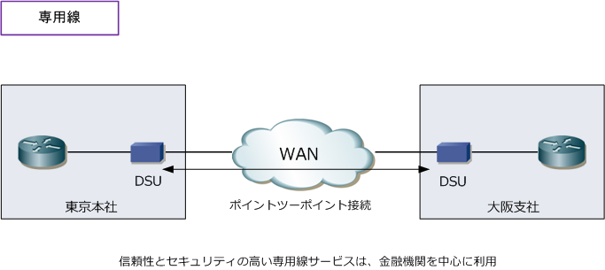
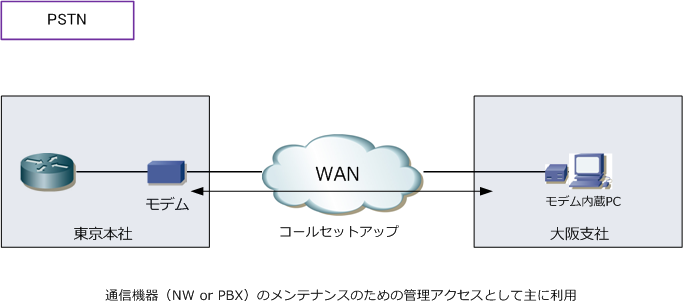
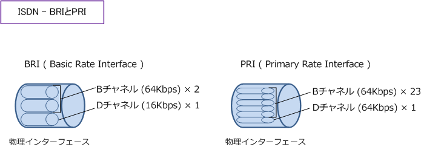
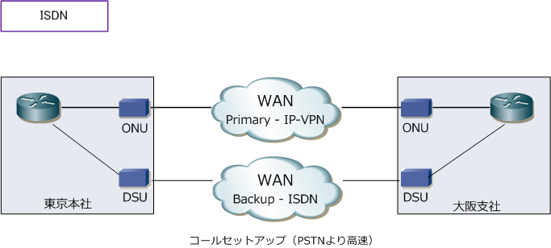

WAN - Digital leased line / PSTN / ISDN
WAN - 回線の種類
WANサービスは専用型と交換型の大きく2つに分類されます。交換型は、回線交換とパケット交換の2つ にさらに分類されます。専用型は、利用者が回線を占有して使用する方式です。一方で、交換型は複数の 利用者が回線を共有する方式です。WAN回線のサービスは、以下の表のとおりに分類することができます。
| 回線のタイプ | 特徴 | WANサービスの例 | 使用プロトコル | |
|---|---|---|---|---|
| 専用型 | 専用線 | 自社専用として回線を借りて１対1で拠点間接続できる。 セキュリティが保証され信頼性が高いが、コストが高い。 |
専用線 | PPP, HDLC |
| 交換型 | 回線交換 | 通信時だけ接続を確立して、通信が終了したら切断する。 コストは従量課金制となる。信頼性がなく通信速度も低い。 |
PSTN | PPP, HDLC |
| 交換型 | 回線交換 | 通信時だけ接続を確立して、通信が終了したら切断する。 コストは従量課金制となる。信頼性がなく通信速度も低い。 |
ISDN | PPP, HDLC |
| 交換型 | パケット交換 | １本の物理回線上で複数の仮想回線で拠点間接続できる。 データは仮想回線を識別する制御情報が付加されて伝送。 専用線より安価、回線交換よりも通信速度や信頼性が高い。 |
フレームリレー | FrameRelay |
| 交換型 | パケット交換 | １本の物理回線上で複数の仮想回線で拠点間接続できる。 データは仮想回線を識別する制御情報が付加されて伝送。 専用線より安価、回線交換よりも通信速度や信頼性が高い。 |
ATM | ATM |
| 交換型 | パケット交換 | １本の物理回線上で複数の仮想回線で拠点間接続できる。 データは仮想回線を識別する制御情報が付加されて伝送。 専用線より安価、回線交換よりも通信速度や信頼性が高い。 |
IP-VPN | IP |
| 交換型 | パケット交換 | １本の物理回線上で複数の仮想回線で拠点間接続できる。 データは仮想回線を識別する制御情報が付加されて伝送。 専用線より安価、回線交換よりも通信速度や信頼性が高い。 |
広域イーサネット | Ethernet |
※ 専用線ではPPP、HDLC 以外のレイヤ2プロトコル以外にも、イーサネット専用線サービスの場合は Ethernet を使用可能です。
WANの回線サービス - 専用線
専用線は、契約したユーザが回線を占有して使用できる回線サービスです。1対1のポイントツーポイントで 接続されます。回線を占有するので契約した通信速度が保証され、セキュリティも保証されますがコストが 高くなります。料金は定額制ですが、拠点間の距離、通信速度、接続する拠点数等に比例して高くなります。 ※ 通信速度の保証とは、アクセス回線からキャリア網内のバックボーン含めてなので絶対保証となります。

WANの回線サービス - PSTN
PSTNは、公衆電話網であり主に音声の通信用の回線サービスです。電話と同じように通信をはじめる時に 通信を確立させて、通信が終了したら切断します。PSTNでは通信中のみ回線を占有して、終了すれば解放 します。利用料金は、接続先への距離と通信時間によって課金される従量課金制です。PSTNでデータ通信 をする場合、ルータやPCなどのDTEをアナログモデムに接続し、通信先に直接ダイヤルアップ接続をします。
通信速度は56Kbpsであり、コールセットアップに時間がかかり通信開始も遅いことから、現在では拠点間の 通信のWANとして利用されることはほとんどありません。PSTNが利用される場合、例えばモデム内蔵のPC からダイヤルアップ接続を行い、リモートから機器のメンテナンスを行うなどの管理アクセスの手段として 使われており、このような接続では少量のトラフィックしか発生しないためPSTNでも問題なく通信できます。 ※ ブロードバンドやリモートアクセスVPNの普及前、外出先から自社へダイヤルアップしメール送受信などで利用されていました。

WANの回線サービス - ISDN
ISDNは、音声通信とデータ通信を統合した回線サービスです。PSTNと同様に、通信開始時に通信を確立 させて通信が終了したら切断します。また、通信中のみ回線を占有し終了すれば解放します。従量課金制。 ISDNは1つの物理回線に対して複数の論理チャネルがあります。そのチャネルには以下の2種類があります。
| ISDNの2種類の論理チャネル | 説明 |
|---|---|
| Bチャネル | データの伝送に使用される通信チャネル |
| Dチャネル | コールセットアップ（シグナリング）の制御情報の伝送に使用される制御チャネル |
ISDNには、BRI（Basic Rate Interface）、PRI（Primary Rate Interface）の2つのI/F規格があります。
| ISDNの2つのインターフェース規格 | 説明 |
|---|---|
| BRI ( 基本インターフェース） | BRIは64kbpsの2本のBチャネルと16kbpsの1本のDチャネルとで構成される。 データ通信用の2つのBチャネルがあるので、1つのBチャネルでデータ通信し もう１つのBチャネルで電話で音声通話を行って、同時に2回線を使用できる。 また、2本のBチャネルを束ねて128kbpsとしてデータ通信をすることもできる。 |
| PRI ( 一次群速度インターフェース） | PRIは、64kbpsの23本のBチャネルと64kbpsの1本のDチャネルとで構成される。 23の論理チャネルにより23拠点同時に通信できる。また、全チャネルを束ねて 1.544Mbpsで1拠点と通信することも可能。1544の内訳は(64×24 + 8) となる。 ※ 8kbpsとはフレーミングビットであることから、実効速度としては1.536Mbps。 |

ISDNは、現在も音声通信としてはまだまだ使用されていますが、データ通信での利用はかなり少なくなって きています。利用例として、下図のように主回線としてIP-VPNや広域イーサネットを利用していて、主回線に 障害が発生した際にコストの安いISDNをバックアップ回線として使用する構成があります。しかし、現在では インターネットVPNが低価格であり広帯域なWANがあることから、以下構成での利用も少なくなっています。
